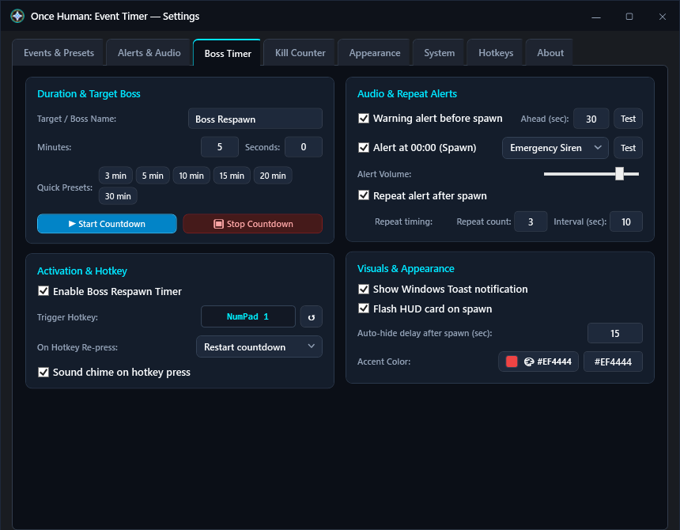
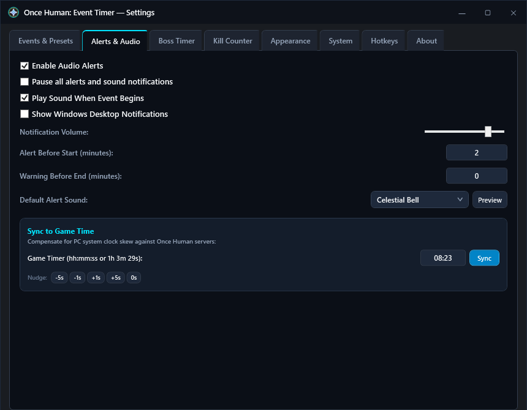
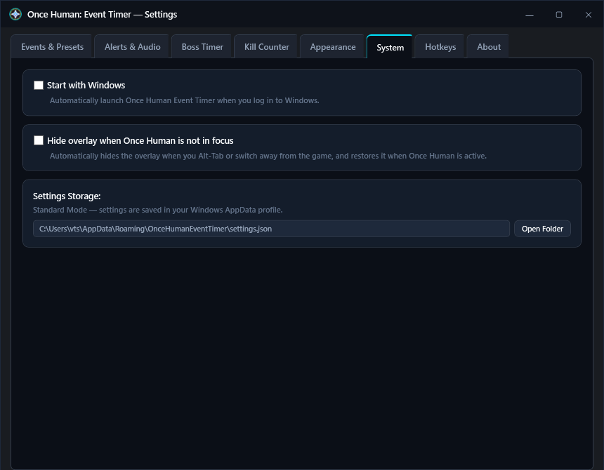

Master Every Anomaly with Zero Drift
A modern, lightweight Windows desktop HUD overlay engineered specifically for Once Human. Track recurring world events, dedicated boss respawns, and farming milestones with sub-second server synchronization and zero FPS drop.

Full HUD tracking multiple concurrent events with circular countdown rings & progress bars
Everything You Need to Conquer Stardust
Designed from the ground up for competitive Once Human players: zero input latency, anti-cheat compliance, and microsecond-level scheduling accuracy.
Universal Event Scheduler
Track multiple concurrent world events on a sleek HUD. Features mid-event checkpoint alerts (such as The Echo War boss portal opening 15 minutes after start) and approaching event filters to hide long 4-hour cycles until 10 minutes before start.
Zero-Drift Clock Calibration
Natural multilingual prompt parser automatically reads in-game countdowns (e.g., 1h 3m 29s, 2h 54m 4s, 08:23) in English, German, and Russian. Compensates for server clock skew instantly with 1-click nudge controls.
Dedicated Boss Respawn Timer
Trigger elite and boss countdowns on demand anywhere in-game with NumPad 1. Includes early warning chimes, 00:00 spawn alarms, Windows desktop toast notifications, dynamic status badges, and 1-click dismiss.
Smart Farm & Kill Counter
Track dungeon runs and boss farming sessions effortlessly. Use NumPad + to increment and NumPad - to undo. Set target goals with visual progress bars, goal celebration chimes, and optional chained Boss Timer auto-start on kill.
DirectFlip & MPO Performance
Utilizes WS_EX_NOACTIVATE and WS_EX_TRANSPARENT to guarantee mouse clicks pass directly into Once Human. Informs Windows DWM never to take focus, preserving GPU Multi-Plane Overlay (MPO) and DirectFlip for zero frame drops.
Procedural Synthesizer Audio
Equipped with a built-in algorithmic sound synthesizer featuring 7 procedural audio alerts (Celestial Bell, Cosmic Pulse, Stardust Ping, etc.). Works completely out of the box with zero external media files, plus support for custom WAVs.
Anti-Cheat Safe Architecture
Zero game process memory touching, zero DLL injection, and zero memory hooks. Employs ChangeWindowMessageFilterEx to safely receive global hotkeys even when Once Human runs with elevated ACE Anti-Cheat integrity levels.
Native Multilingual Support
Fully localized in English, German (Deutsch), and Russian (Русский). Every dialog, preset description, tooltip, and hotkey configuration features complete key parity and seamless English fallback.
15 Authentic Built-in Presets
Curated according to current Once Human meta priorities. Calibrate any event dynamically from in-game countdowns or clone presets for multi-world farming.
| Meta Priority & Event Name | Cycle Period | Schedule Anchor | Duration | Mechanic & Alert Highlights |
|---|---|---|---|---|
|
#0 META
Visional Wheel: The Echo
|
60 min | XX:15:00 | 30 min | Season 5 Dissonant Resonance. Mid-event boss portal alert at 15m elapsed (XX:30:00). |
|
#1 META
Cargo Scramble (Sproutlet Truck)
|
60 min | XX:00:00 | 20 min | Sproutlet Truck PvP event across Red Sands and Iron River zones. |
|
MANUAL SYNC
Drift Greenhouse [Worlds 1–12]
|
240 min (4h) | Per-World Anchor | 30 min | Isles of Abyss 4-hour cycle. Auto-hidden from HUD until 10m before start threshold. |
|
COOP BATTLE
Manibus (Prime War)
|
120 min (2h) | XX:00:00 | 30 min | Massive cooperative battlefield defending the Staroid Restraint device against Manibus. |
|
ANOMALY
Skyripper Anomaly
|
60 min | XX:37:29 | 20 min | High-altitude aerial floating rift anomaly encounter. |
|
OPEN WORLD
Public Crisis (Harrowing)
|
30 min | XX:00:00 | 15 min | Dynamic open-world public crisis rewarding weapon calibration mods and Stardust. |
|
DESERT BOSS
Chiron the Centaur
|
60 min | XX:30:00 | 15 min | Desert world boss encounter with rapid respawn window. |
|
WAVE DEFENSE
Extraction Workshop Defense
|
15 min | XX:00:00 | 10 min | Stardust fuel wave defense production cycle. |
|
FESTIVAL
Lunar Revelry (Lord of Moonlight)
|
60 min | XX:40:00 | 20 min | Lord of Moonlight gathering festival with exclusive cosmic loot drops. |
|
BLOOD MOON
Lunar Oracle (Blood Moon)
|
60 min | XX:45:00 | 15 min | Nocturnal Blood Moon event with high-tier aberrant mutations. |
|
INVASION
Aberrant Progeny (Spore Tide)
|
60 min | XX:10:00 | 25 min | Spore Tide invasion wave defending against aberrant hive monsters. |
|
LOOT RUN
Blackfell Stronghold Loot Run
|
240 min (4h) | XX:00:00 | 15 min | 4-hour optimal high-yield weapon/gear crate looting route in Blackfell Fallen Zone. |
|
RESET
Crate Loot Reset (4-Hour)
|
240 min (4h) | XX:00:00 | 5 min | 4-hour global refresh cycle for high-tier mystical crates and stronghold loot. |
|
CUSTOM
Custom Wheel Event
|
Custom | Custom Anchor | Custom | User-defined cyclic event with multi-hour start anchor and custom chimes. |
|
LEGACY
Gravity Abyss (Legacy)
|
60 min | XX:22:29 | 30 min | Concluded Season event with low-gravity tide and Stardust Crystals. |
Designed for Immersion
Explore the high-contrast Stardust aesthetic across HUD modes, audio synthesizer, hotkey mapping, and granular settings.
Multi-Timer Full HUD
Concurrent multi-event tracking with neon circular countdown rings, active progress bars, and phase badges.

Minimal Floating Mini-HUD
Ultra-compact floating badge showing the next upcoming event, remaining time, and active mute status.

Event Presets & Server Sync
Universal scheduling engine with 15 built-in presets, custom dark scrollbar, and sub-second game clock calibration.

Dedicated Boss Respawn Timer
On-demand boss and elite respawn countdown triggered via NumPad 1, warning chimes, and spawn alarms.

Smart Farm & Kill Tracker
Session run and kill tracker with target goals, quick boss presets, hotkey controls, and chained boss timer triggers.

Procedural Audio Synthesizer
Algorithmic audio presets with volume controls, skew calibration, and instant audio preview playback.

Appearance & Scale Controls
Granular customization for overlay opacity, scale, borders, progress ring styles, and Mini-HUD elements.

Global Hotkeys & Live Recording
Interactive key recording with anti-cheat safe UIPI message filters and single-click default restore buttons.

System & Game Focus Detection
Windows Autostart integration, update checking, and automatic foreground game window focus monitoring.

Zero-Distraction In-Game Hotkeys
Execute actions seamlessly while keeping your hands firmly on your controls. Fully customizable in Settings with live recording.
| Shortcut Key | Function & In-Game Action | Category | Quick Copy |
|---|---|---|---|
| NumPad 1 |
Start / Restart Boss Respawn Timer
Launches the dedicated elite boss respawn countdown immediately.
|
Boss Timer | |
| NumPad + |
Increment Kill Counter (+1)
Registers a successful kill/run and triggers optional chained boss timer auto-start.
|
Kill Tracker | |
| NumPad - |
Undo / Decrement Kill Counter (-1)
Reverts an accidental increment during fast-paced dungeon farming.
|
Kill Tracker | |
| Ctrl+Alt+O |
Toggle Settings Dialog
Instantly opens, brings to focus, or closes the Settings configuration window.
|
System | |
| Ctrl+Alt+S |
Toggle HUD Overlay Visibility
Hides or restores the HUD overlay on demand during cutscenes or screenshots.
|
HUD | |
| Ctrl+Alt+L |
Toggle Click-Through & Position Lock
Locks HUD positioning and allows mouse clicks to pass freely into the game.
|
HUD | |
| Ctrl+Alt+P |
Toggle Pause / Resume Audio Alerts
Temporarily silences all synthesized chimes and Windows notifications.
|
Audio |
Get Once Human: Event Timer
Choose your preferred distribution format. All packages are built directly from GitHub Actions with verified checksums.
Standalone Edition
Plug & play single-file executable. Zero dependencies.
~63 MB- Bundles .NET 8 LTS Runtime internally
- Works instantly on any Windows 10/11 PC
- True Portable or AppData dual storage mode
- Built-in auto-updater with in-place replace
Portable Edition
Ultra-compact framework-dependent distribution.
~0.39 MB- Microscopic download footprint (< 0.5 MB)
- Fast launch with shared desktop runtime
-
True portable support via
portable.txt - Requires .NET 8 Desktop Runtime installed
Windows Installer
Guided setup wizard with desktop & start menu shortcuts.
~64 MB- Classic Inno Setup installation wizard
- Automatic Start Menu and Desktop shortcuts
- Clean Windows Programs & Features uninstaller
- Zero dependencies (includes runtime)
System Requirements
- OS: Windows 10 (64-bit, version 19041+) or Windows 11
- Display Mode: Borderless Windowed or Windowed (preserves DirectFlip)
-
Compatibility: Steam Edition (
ONCE_HUMAN.exe) & NetEase / Loading Bay (AF_AP.exe) - Runtime: Pre-bundled in Standalone/Installer; .NET 8 Desktop Runtime required for Portable
Quick 3-Step Setup
OnceHumanEventTimer.exe.Frequently Asked Questions
Clear technical answers regarding anti-cheat safety, game compatibility, and overlay behavior.
WS_EX_LAYERED, WS_EX_TRANSPARENT). It never attaches a debugger, reads, writes, hooks, or injects into Once Human process memory. Furthermore, it utilizes ChangeWindowMessageFilterEx to receive global keyboard shortcuts through Windows UIPI boundaries without requiring administrator privileges or interfering with Anti-Cheat Expert (ACE).
1h 3m 29s or 08:23), and hit Sync. The built-in GameTimeParser parses multilingual syntax (English, German, Russian) and automatically calculates the exact server skew to sync all timers instantaneously.
WS_EX_TRANSPARENT extended style, allowing all mouse clicks, aiming, and firing actions to pass directly through the timer into Once Human without losing focus or responsiveness.
WS_EX_NOACTIVATE integration preserves this hardware presentation without stuttering.
%APPDATA%\OnceHumanEventTimer\settings.json. If you prefer True Portable mode, simply create a blank file named portable or portable.txt (or place settings.json) in the same directory as OnceHumanEventTimer.exe. The timer will automatically detect it, migrate any existing configuration, and keep all data self-contained.
ONCE_HUMAN.exe) and the NetEase / Loading Bay launcher client (AF_AP.exe, AF_AP_Client.exe) are supported natively. The built-in GameFocusMonitor automatically monitors foreground game windows using lightweight PROCESS_QUERY_LIMITED_INFORMATION with zero anti-cheat hooks or performance overhead.